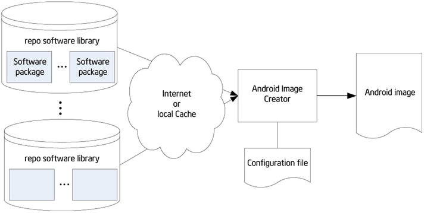

Due to the characteristics of any embedded systems, such as resource constraints, tailoring and customization are important features for an embedded OS, and Android is no exception. This chapter provides a general discussion of customization in an embedded OS and then explains the customization of Android, specifically.
Tailoring and Customization of an Embedded OS
Not all functions and services provided by the embedded OS are included in a special embedded application, for two reasons. First, the embedded system is always resource constrained, especially with regard to storage space; thus it is impossible to include all redundant functions in the system at release. Second, many commercial embedded OSs collect a licensing fee based on the components chosen by the user. So, users should tailor the embedded OS according to their individual needs. The principle of OS customization is shown in Figure 6-1.
Figure 6-1.
Principle of OS customization
For example, Windows XP Embedded OS offers tens of thousands of components—more than the functions of desktop Windows XP. But for a subway baffle-gate system based on Windows XP Embedded, for example, components such as Windows Media Player, the Internet Explorer browser, the DirectX settings panel, and Explorer task manager are not required. Eliminating such components reduces the hardware resources required by the system, thus reducing the cost; and this makes the system operate faster, thereby improving efficiency.
A majority of embedded OSs provide means for customization and tailoring. However, there are many different tailoring modes: some start with compiling source code, which requires the user to configure the option of conditional compilation; some start by linking the target files, linking to different library files according to the user’s configuration; and the remaining modes extract precompiled files from the existing binary file library according to the user’s choice. Table 6-1 lists the customization modes provided by frequently used embedded OSs.
Table 6-1.
Customization Modes of Different Embedded Operating Systems
Embedded OS | Customization Modes |
|---|---|
Windows CE | Provide Platform Builder IDE and graphical component options. Link different library files according to the selected components. |
Embedded Linux | For the kernel, generate config files via make config before; then compile according to the configuration files. |
Windows XP Embedded | Provide Target Designer IDE and graphical component options. Extract required binary files according to the selected components; no compilation is necessary for the linking process. |
μC/OS-II | Selectively and conditionally compile some part of the code according to the value defined by the C language macro in the header file. |
VxWorks | Select which modules are necessary in the Tornado IDE. |
After system customization, you get an embedded OS that runs on the target hardware device and has been optimized for the special application field.
Overview of Android Customization
Theoretically, Android customization falls into two levels: customization of the Linux kernel and customization of the entire image. Customization of the Linux kernel is similar to customization of embedded Linux: both involve the same methods and steps. Android customization mainly focuses on image customization. Let’s see why.
ROM Package/Image
The Android image is commonly known as a read-only memory (ROM) package, which is the system package of an Android phone. The reason for this naming convention is that mobile phones prior to Android phones, including smartphones (such as Nokia and WM) and non-smart phones (such as Sony Ericsson, Moto P2K platform, and MTK), all have a separate ROM chip storage system file. So, the system file is referred to as ROM package or ROM image.
The image is a cross-compiled binary Linux file that can be installed and run on some embedded device, becoming the OS of the device. To better understand this concept, let’s review the typical development process, shown in Figure 6-2.
Figure 6-2.
Development process for Android software
For embedded software, generally speaking, developing Android software requires the same steps as general-purpose software: designing, encoding, compiling, linking, packaging, deploying, debugging, and optimizing. For some Android systems, testing and verification steps are also required. The OS deployed on the embedded logic device also goes through such phases. For example, for a Linux system, you get its kernel source code, cross-compile, and generate code that can be executed on the embedded target machine; then you compress and package this code to form the image file (see Figure 6-3). The last step is deployment. Unlike the deployment of an application file, the deployment of an OS image file is referred to as installation due to the particularity of its operation.
Figure 6-3.
Image use process
The image file (package) of a complete executable software system in the embedded system consists of the bootloader, OS kernel (kernel for short), file system, and user applications. The actual image file usually adopts a partition (also known as independent layer) structure to store all parts that are located in different areas (modules) of the image, and all parts are loaded into the system from the bottom layer. An example of a typical embedded system image is shown in Figure 6-4.
Figure 6-4.
Example of an embedded system image
The Android image includes a bootloader, the core OS, a hardware adaptation module, a file system, the user experience, and applications. The core OS layer of Android includes the Linux kernel and various middleware modules. Below the core OS layer is the hardware adaptation layer. To adapt to different hardware, diversified drivers need to be installed for the OS. Without these drivers, the OS cannot use the hardware to operate as usual. Therefore, the image consists of the drivers and any applications developed by the user.
The Android image usually exists in the form of a compressed file (.zip, tar.gz, or a similar file format), which usually contains the file and folders shown in Table 6-2. The file structure can be seen after the compressed file is decompressed.
Table 6-2.
File Structure of an Android Image File
Name | Property r | Remarks |
|---|---|---|
META-IN
| Directory | Optional; may be unavailable in some images |
system
| Directory | |
boot.img
| File |
The function and structure of the files and folders are as follows:
- boot.img file: The system image, including the Linux kernel, bootloader, and ramdisk launched by the system. A ramdisk is a small file system that holds the core files needed to initialize the system. The boot.img file is created using an open source tool called mkbootimg.
- META-INF directory: The system-update script, with the path META-INF\com\google\android\updater-script.
- system\app directory: All system-provided applications such as calendar, contacts, Gmail, and so on. You can put your application’s .apk file in this directory so it can be directly installed when the ROM is reflashed.
- system\bin directory: System commands such as top, which can be executed after logging in through the adb shell.
- system\etc directory: Configuration files.
- system\font directory: All kinds of fonts.
- system\framework directory: Java core files, such as .jar files. Under the Dalvik virtual machine (DVM), it supports the framework developed by the user via Java.
- system\lib directory: Android local shared libraries that consist of .so files, which are shared objects in the form of ELF binaries, compiled by assembler, C, or C++.
- system\media directory: Media files such as bootanimation.zip, which consists of .png pictures used for boot animation and for changing the boot image. Under the audio directory are some audio files that are used as ringtones and for notifications.
Overview of Android Image Customization
Android image customization, commonly known as creating Android ROM (creating ROM for short), is an academic term. The Android core OS layer has multiple components, and the applications vary in different systems; image customization decides which components and applications are written into the image file of the target system. The process makes a personal customized system file into a flashable ROM image. This is also known as a system firmware update.
The ready-made Android image can be installed onto an Intel Atom processor-based system (that is, a mobile phone, tablet, or the like) via USB flash and SD card. Then the system with the Android image will have the capability to enter the Android operating environment at self-start.The MicroSD card, originally called the TransFlash Card, was launched by SanDisk. It is 15 × 11 × 1 mm, about the size of a fingernail. It can be used in an SD card slot via an SD adapter card and is widely used in mobile phones.
You can create Android ROM in the following ways:
- Compile the Android source code, which is a little complex.
- Create or customize your own ROM based on the existing ROM.
The process of Android image customization is shown in Figure 6-5.

Figure 6-5.
Process of Android image customization
Example of Android Image Customization
The following example illustrates the second way to customize Android: by creating ROM using the cloned ROM image released by device manufacturer for targeted hardware. In this way, the Android customization includes structure parsing for Android system folder, application software updates, and the customization of the ROM signature package. The steps are as follows:
1.
Download the compiled ROM package from Android’s official website, your mobile phone manufacturer’s official website (for example, the website for the Lenovo K900 mobile phone), or websites providing an Android image. For example, the ROM provided by the Lenovo K900 mobile phone’s website (www.lenovocare.com.cn/ProductDetail.aspx?id=719) is shown in Table 6-3. Be noted that since the Lenovo K800 and K900 phones are sold in China market, the software dates are only provided by Lenovo’s official site in Chinese language.
Table 6-3.
Information in the ROM Package on the Lenovo K900 Website
ROM Name | Description | Android Version | Date of Release |
|---|---|---|---|
K900_1_S_2_162_0074 | Official update | 4.0.4 | Aug. 8, 2012 |
K900_1_S_2_162_0086 | Official update | 4.0.4 | Aug. 15, 2012 |
K900_1_S_2_019_0113_130903 | Official update | 4.2.0 | Sep. 3, 2013 |
K900_source | Official update | 4.4 | May 23, 2014 |
2.
Compress all the ROM files into one folder (named NewsROM” in this example).
3.
Delete and add files in the ROM folder (NewsROM in this example) to tailor and customize Android.
Some customization examples are as follows:
- Go to the data\app directory to check whether the preinstalled applications are what you need. At this point you can remove unnecessary apps. You can also add the default installed applications you need.
- Go to the system\app directory and customize the system applications for your device. You can delete unwanted system applications or add your special-built or customized applications (as customized .apk files). Be careful: some system applications are dependent on others, so best practice is to test before the customization to fix dependencies and other issues prior to implementing the changes to the Android system image.
- Go to the system\media directory to make modifications such as changing the boot image or adding a customized ringtone.
- Go to the system\bin directory to add commands and so forth.
If you’re worried about deleting some files accidently and thus causing failure at startup, you should adopt a conservative approach: execute delete or add operations only for files in the data/app and system/app folders.
4.
Compress the modified ROM folder as a .zip file. Ensure that the contents, including META-INF, system, boot.img, and data (optional), are displayed when you double-click the compressed file.
5.
Install and configure the Java environment. The Java environment is required in the following steps to support the operation of the auto-sign tool, so you need to install and set up Java operation. Download the latest JDK (jdk1.7.0 in this example), and install it; then follow these steps:
a.
Set the Java environment variable as follows: right-click My Computer and select [Properties] ➤ [Advanced] ➤ [Environment Variables] ➤ [System Variables] ➤ [New] in the pop-up shortcut menu.
b.
In the dialog box, set [Variable Name] to “JAVA_HOME variable value: JAVA installation directory”. Find [path] in the same place, double-click it, and add “C:\JDK1.7.0;.;C:\JDK1.7.0\bin” after the variable value.
c.
Reboot the system.
d.
Test. Enter Java commands in the command-line window. The configuration is successful if no error message appears.
6.
Use the sign tool to sign the .zip packages. The steps are as follows:
a.
Download the auto-sign tool and unpack it under a directory (myautosign in this example). The tool can be downloaded at
http://androidforums.com/developer-101/8665-how-signing-roms.html
.
b.
Rename the .zip file package to update.zip, and copy it to the directory where you unpacked auto-sign (the myautosign directory).
c.
Run the sign.bat file under the directory where you unpacked auto-sign.
d.
After the customization build, the directory contains an update_signed.zip file, which is the signed ROM package and the customized ROM package you need.
Installation/Reflash of the Android Image
Image installation is required to use the customized image on the target machine. In other words, the process of image customization and use must go through two stages: image generation (production) and image installation, as shown in Figure 6-6.
Figure 6-6.
Image generation and installation
Image installation means installing the Android image on the target device or emulator. This process is commonly known as reflashing. Reflashing an Android phone is equivalent to reinstalling the system for the phone, which is similar to computer system reinstallation. Generally speaking, when a computer needs system reinstallation, you use a system disk or an image file. When an Android phone needs to be reflashed, you burn an official or third-party ROM image file into the ROM via a tool and install a new system for the phone.
The official Android website often releases the latest Android image systems for users, so you can download image files directly to skip image-generation stage. For users, the customization and installation process can be very simple: download the image, and reflash.
Android installation also involves recovery and wiping:
- Recoveryis a mode of the mobile device. Through recovery, users can install the system (that is, reflash ROM), empty various data from the phone, partition a memory card, back up and restore data, and so on. Recovery is similar to the Ghost one-key recovery function on a computer.
- Wipemeans to erase and remove. Wiping is an option in recovery mode; it removes various data from the phone, similar to restoring factory defaults. Wipe is most commonly used before the reflash. Users may see the Wipe prompt, which suggests the need to clear data before the reflash.
As mentioned, Android installation is essentially an issue of deployment in the process of software cross-development, but generally you adopt offline programming instead of online programming. In the installation process, the media you use are SD cards and other portable external storage devices. This process is shown in Figure 6-7. The installation is divided into two steps: first, place the image from the host on the portable SD card external storage device; second, start the machine from the portable external storage device and install Android on the target machine. 
Figure 6-7.
Android image installation
Image Installation Example
Following is an example of image installation. The path/directory may be different from different OEMs or from different Android versions (this example is based on a Lenovo phone):
1.
Empty the phone’s SD card. This step is optional and can be done either on the host or on the phone. It is very simple to complete the step on the host: unplug the SD card from the phone, insert it in the SD card reader of the host, and delete all files from the removable disk at the host (for example, in Windows).
Empty the SD card on the phone by following these steps:
a.
Connect the phone to the host.
b.
Execute the following commands successively in the command-line window at the host:
adb devices
adb remount
adb shell
su
rm -r /system/sd/*
- (Note: sdcard is usually mounted under /storage/sdcard0 or /sdcard, However, the location may be different if you’re using a device from a different OEM or on another Android version.)
2.
Copy the customized ROM file (update_signed.zip in the example) to the SD card, and rename it update.zip.
3.
Make sure the SD card has been inserted in the phone. Restart the phone, and enter Recovery mode. Follow these steps:
a.
Shut down the phone normally.
b.
Press the power button and the <volume+> button of the device at the same time: the phone starts while vibrating and enters BKB Provisioning OS mode. Double-click the <volume+> button quickly to make the system enter Test mode.
c.
Press <volume+> and <volume-> to move to the sixth option (SD Update), and click Enter in the lower-left corner. Automatic reflash begins.
4.
Reboot.
The entire reflash process takes a few minutes. The phone restarts automatically after vibrating twice; the first reboot takes longer, and then the familiar four-leaf clover interface appears.
After reboot, choose Settings ➤ System Information to check the phone, network, battery, and version information; IMEI code; and internal version number to confirm whether the upgrade has been successful.
Automating the Procedure with flash_device.sh
There is a script that will perform all the previously described procedures for you. This script is located here:
<Path-to-your-project>/vendor/intel/support/flash_device.sh
You can add this script to your bin folder and run it from a terminal window. You should be able to find the section on this topic in the user manual from the OEM.
Intel Build Tools Suite
Intel has developed an Android Build Tools Suite (see Figure 6-8) to help developers easily and quickly do the Android system build and customization. The suite provides the following features:
- Device customization
- Ability to generate a customized firmware module and Android OS image
- Final customization and localization
- Ability to compile a single image and load the image into a supported device
- Ability to verify configuration readiness
- Troubleshooting and calibration
Figure 6-8.
Intel Build Tools Suite
Summary
This chapter completed the discussion of system-level topics for Android. Starting in the next chapter, you begin to learn application development for Android on x86, and you see how to develop user interfaces suitable for the UX and interaction characteristics of mobile devices on Android. You start by learning about Android graphic user interface (GUI) design, because it’s an indispensable part of human-computer interaction (HCI). Because resources are limited for a mobile phone or tablet, GUI design of Android systems is more challenging than for desktops. In addition, users have more rigorous demands and expectations for a user-friendly experience. Interface design has become one of the important factors determining the success of applications for Android on the market.